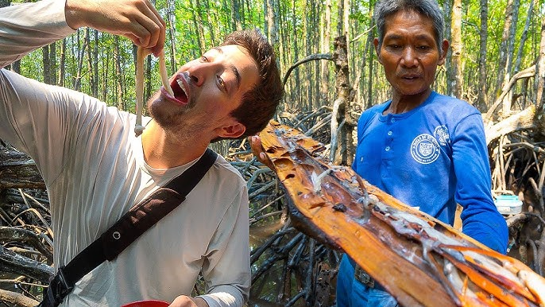

WHAT DOES TAMILOK TASTE LIKE?
-Tamilok has a taste that’s often compared to oysters or mussels. It’s briny, with a distinct saltiness from the sea, and has a creamy, slightly slimy texture. The flavor profile is mild and earthy, with a hint of sweetness and a subtle woodsy aftertaste, likely from the mangrove wood it feeds on.
